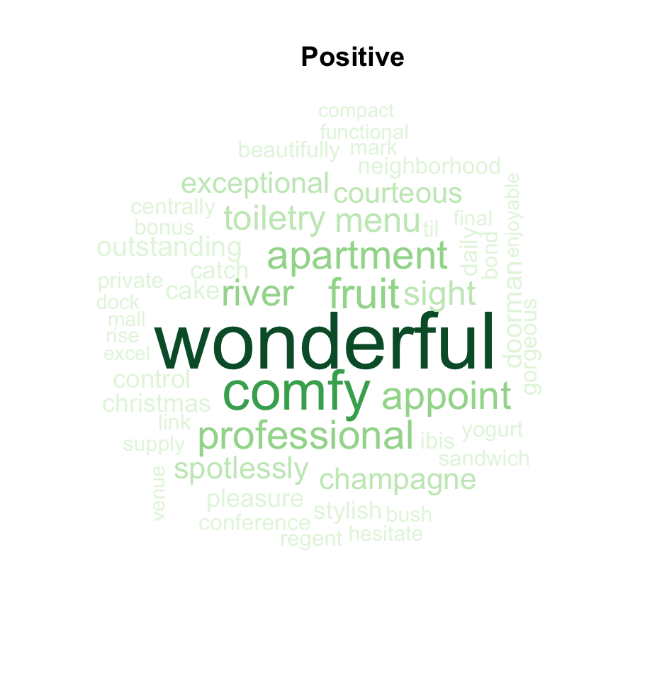
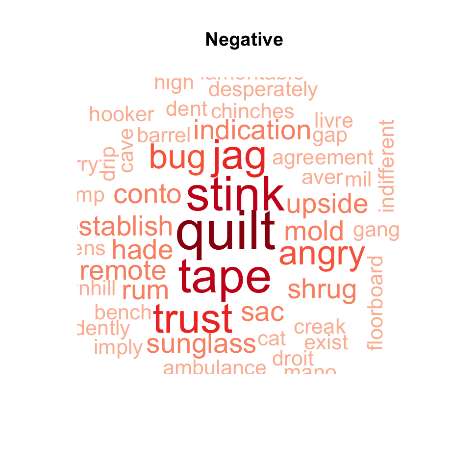

Overview
An NLP project extracting customer experience themes and satisfaction drivers from 2,000+ unstructured hotel reviews. The goal was to turn raw text into structured, prioritised insight that hotel management could act on directly.
The Business Question
Hotels receive thousands of reviews but rarely have the tools to systematically analyse what customers are actually saying. Which service areas generate the most negative sentiment? Where should management invest to move the needle on ratings?
Methodology
- Dataset: 2,000+ unstructured hotel customer reviews
- Text preprocessing pipeline: tokenisation, stop-word removal, stemming, cleanup
- TF-IDF weighting to surface high-signal terms across the corpus
- TF-IDF modelling applied separately to positive (4–5 star) and negative (1–2 star) review groups to surface high-signal distinguishing terms
- Thematic interpretation of top TF-IDF terms to identify recurring satisfaction and dissatisfaction drivers
- Output: prioritised insight report with ranked improvement recommendations
Key Findings
Hygiene and cleanliness failures dominate negative reviews
Top TF-IDF terms in 1–2 star reviews: 'stink', 'mold', 'bug', 'tape' — all pointing to maintenance failures
Cleanliness complaints cluster heavily in 1–2 star reviews
Second highest negative driver after staff sentiment
Location and value-for-money consistently appear in positive reviews
Structural advantages difficult to replicate by competitors
5 actionable themes identified from TF-IDF term clusters
Hygiene · Staff & Service · Comfort · Facilities · Value-for-Money
Topic Themes
Responsiveness, attitude, helpfulness. Highest negative sentiment weight — the single biggest lever for improving ratings.
Room hygiene, bathroom condition. Second highest negative driver — operationally fixable with focused protocols.
Proximity to transport and attractions. Consistently positive — a structural advantage hotels can market more aggressively.
Quality and variety of food offering. Mixed sentiment — positive in budget properties, negative in higher-end segments.
Price-to-quality ratio. Positive in budget segment; negative in luxury — expectations gap is the core driver of dissatisfaction.
The Data

Top 25 Negative Words by TF-IDF Score — extracted from 2,000+ hotel reviews. High-weight terms like "stink", "mold", and "bug" directly point to cleanliness and maintenance as the dominant sources of guest dissatisfaction.
What Satisfied Guests

Top 25 Positive Words by TF-IDF Score — from 4–5 star reviews. Terms like "spotlessly", "professional", "wonderful", and "comfy" reveal that cleanliness detail, staff professionalism, and physical comfort are the primary drivers of guest satisfaction.
Sentiment at a Glance

Positive reviews — word size reflects TF-IDF weight.

Negative reviews — hygiene terms dominate.
Business Implications
The TF-IDF analysis reveals a clear prioritisation for hotel management. Hygiene failures are the single biggest source of negative reviews and are operationally fixable — a stronger housekeeping checklist and room inspection protocol would directly address the top negative terms. Staff behaviour is the second lever. Location and comfort are already working strengths and should be emphasised in marketing. These findings give management a ranked, evidence-based improvement roadmap grounded directly in the voice of the customer.